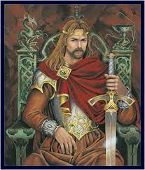

L'Angleterre est devenue un Royaume lors de l'union législative de la
Grande-Bretagne et de l'Irlande qui a eu lieu le 01/01/1801. L'Angleterre
devient le Royaume-Uni de Grande-Bretagne et d'Irlande. Depuis 1952, le
royaume est gouverné par Elisabeth II. C'est devenu une figure
emblématique, a 96 ans elle est la personnnalité qui a été le plus
longtemps à la tête du royaume.
Le palais de Buckingham Palace a été construit en 1703 par John Sheffield
pour le duc de Buckingham et de Normanby, par la suite il a été agrandi au
cours du XIXe siècle par John Nash pour le roi George IV
Présetation ici, avec le titre héro en dessous

Le roi Arthur est un des personnages historiques le plus connu d'Angleterre. Il est apparu au VIe siècle, c'est un guerrier gallois, d'origine celte, il fut le symbole de la résistance face aux Saxons. Nombres de récits ont vanté ses exploits, romancé ses aventures. Geoffrey de Monmouth est à l'initiative de nombreuses histoires